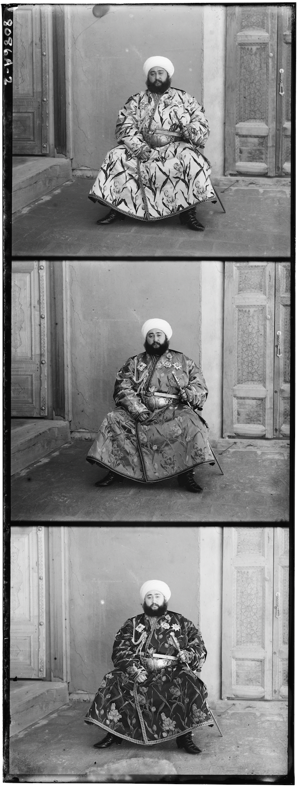

P Background
In 1909 Sergei M. Prokudin-Gorskii photographed scenes across Russia, but shooting the same green, red, and blue filters on a silge glass plate, hoping that in teh future, someone would be able to recombine the three exposures into fully coloured images. This project goes through implementing this very vision!
We take the plates that Prokudin-Gorskii shot into, split the plate into blue, green and red channels, and then explore different processing techniques to create colour photographs.


3 Different Methods of Alignment: The first method is to start with a naive single-scale alignment
on low resolution imagee(windowed NCC/L2), then add a multi-scale image pyramid algorith to make
large TIFFs tractable, and finally use an edge based variantto align
across channels.